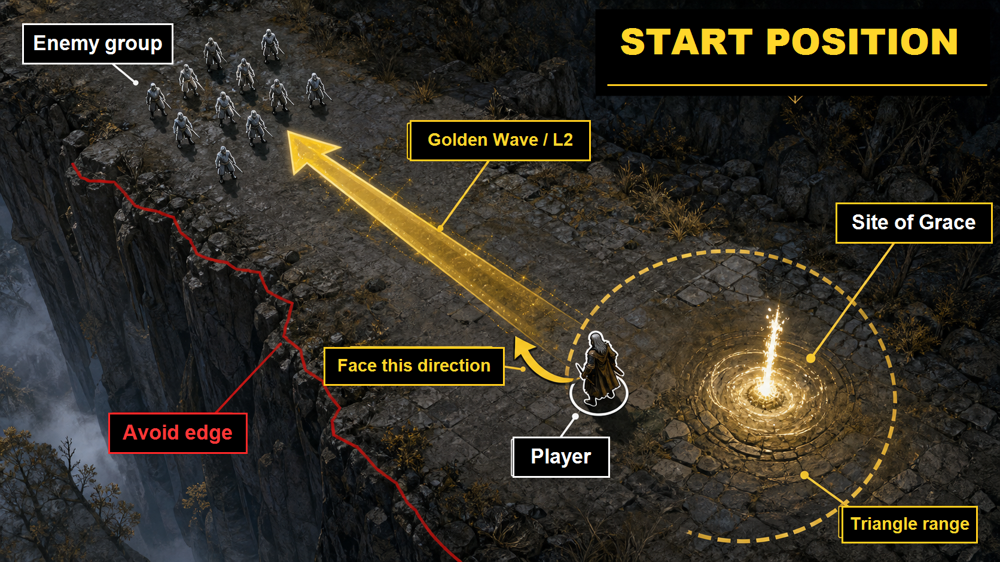

1. この手順書の対象
この手順書は、公開ZIPを任意のフォルダへ展開し、必要な外部ソフトを準備してから使う前提です。
%USERPROFILE%\Documents\日常の困りごと\エルデンリング_自動レベリング
最初に大事な前提
- この仕組みは 自分のPS5をリモートプレイで操作 します。
- 公式のPS Remote Playアプリではなく、chiaki-ng を使います。
- 入力の流れは PCの仮想DS4 -> chiaki-ng -> PS5 です。
- PS5の画面がchiaki-ngに映っていない状態では、マクロ入力はPS5へ届きません。
- 公開ZIPにはPythonの仮想環境、chiaki-ng、ViGEmBus、参考元XMLは含まれません。READMEの初回準備を先に行ってください。
現在の完成版の操作フロー
XML再生 -> 黄金波1回目 -> XML後半の移動/待機 -> 黄金波2回目 -> タッチパッド -> 三角 -> × -> × -> 即ニュートラル復帰 -> ニュートラル状態を3秒維持 -> 次ループ
最後の3秒は、XMLの残り入力を再生せず、コントローラーを完全ニュートラルにしたまま待ちます。これにより、停止後に上方向入力が残る問題を避けます。
2. 使うファイル
| ファイル | 用途 |
|---|---|
start_chiaki.cmd |
chiaki-ngを起動します。 |
check_virtual_gamepad.cmd |
仮想コントローラーがWindowsに出るか確認します。初回確認用です。 |
dry_run_macro.cmd |
PS5へ入力を送らず、マクロ内容だけ表示します。 |
test_one_loop.cmd |
1ループだけ実行します。初回テスト用です。 |
loop_xml_prefix_touch_grace_until_stop.cmd |
止めるまでループ実行します。通常運用で使います。 |
start_macro.cmd |
止めるまでループ実行する別入口です。引数を追加したい時に使います。 |
実際の処理本体は macro\replay_ps4macro_xml.py です。通常は直接触る必要はありません。
3. 初回だけ確認すること
3.1 PS5側の設定
- PS5で 設定 -> システム -> リモートプレイ を開きます。
- リモートプレイを有効にする をオンにします。
- レストモードから起動したい場合は、設定 -> システム -> 省電力 -> レストモード中に使う機能 で、ネットワーク関連の項目を有効にします。
3.2 chiaki-ngの登録
start_chiaki.cmdをダブルクリックします。- chiaki-ngにPS5が表示されていれば、PS5を選んで接続します。
- 未登録の場合は、PS5側で 設定 -> システム -> リモートプレイ -> 機器をリンク を開き、8桁のPINを表示します。
- chiaki-ngの登録画面で、HostにはPS5のIPアドレスを入れます。例として
192.168.x.xの形式で入力します。 - PSN Account-IDは、chiaki-ngの PSN Login または Public Lookup で取得します。
- Remote Play PINにはPS5に表示された8桁のPINを入れます。
- Console Pinは空欄で構いません。
| 登録画面の欄 | 入力するもの |
|---|---|
| Host | PS5のIPアドレス。例: 192.168.x.x |
| PSN Account-ID | PSN LoginまたはPublic Lookupで取得されるID。PSNのオンラインIDをそのまま入れる欄ではありません。 |
| Remote Play PIN | PS5の「機器をリンク」に表示される8桁のPIN。 |
| Console Pin | 空欄でOK。 |
| Console | PS5 を選択。 |
PSN Login後にredirect画面になった場合
失敗ではありません。ブラウザのアドレスバーに出ているURLを丸ごとコピーし、chiaki-ng側のRedirect URL欄に貼り付けてください。貼り付け後にPSN Account-IDが埋まれば次へ進めます。
3.3 仮想コントローラーの確認
check_virtual_gamepad.cmdをダブルクリックします。- Windowsのゲームコントローラー画面が開きます。
- 仮想コントローラーが表示されれば準備OKです。
4. エルデンリング側の準備
- エルデンリングは オフライン で起動します。
- 祝福 王朝に至る崖路 へ移動します。
- 神の遺剣 を装備し、L2で 黄金波 が出る状態にします。
- エルデンリング側の カメラ感度を5 に設定します。
- 初期位置を合わせます。目安画像がある場合は下の画像を参考にします。

初期位置の見方
崖・落下側が画面左、祝福が画面右に見える向きにします。黄金波はしろがね人の群れへ飛ぶように、画像の矢印方向へ向けます。
角度が合わない時
マクロ側のスティック倍率は現在補正なしです。カメラ感度は 5 が適正です。まだ角度がずれる場合は、初期位置と向きを先に合わせてください。
5. 実行手順
5.1 chiaki-ngを起動する
start_chiaki.cmdをダブルクリックします。- chiaki-ngでPS5へ接続します。
- chiaki-ng画面にPS5の映像が出ていることを確認します。
黒いcmd画面が閉じても、chiaki-ngのウィンドウが起動していれば正常です。chiaki-ngのウィンドウ自体が出ない場合は、トラブルの「chiaki-ngが起動しない」を見てください。
5.2 まずdry-runで確認する
dry_run_macro.cmdをダブルクリックします。- 黒い画面に操作内容が表示されます。
- この時点ではPS5へ入力は送られません。
正常なら、次のような内容が表示されます。
Loaded 4947 states
Duration: 19.800s
Controller mode: virtual DS4
Tail trim: replay stops at last Cross release 19.800s, then neutral wait 3.0s5.3 1回だけテストする
- エルデンリングを初期位置に置きます。
test_one_loop.cmdをダブルクリックします。- 1ループだけ実行されます。
- 黄金波、地図操作、祝福移動、次ループ可能な位置への復帰を確認します。
1回テストで黄金波の方向、タッチパッド、三角、×のどれかが失敗する場合は、無限ループへ進まず先に直します。
5.4 止めるまでループする
loop_xml_prefix_touch_grace_until_stop.cmdをダブルクリックします。- 黒い画面に
Mode: full reference XML replay.と表示されます。 - 止めるまでループ実行されます。
停止方法
黒い画面を選択して Ctrl+C を押します。Ctrl+C後は仮想コントローラーをニュートラル状態で3秒維持してから終了します。Windowsから確認された場合は Y を押してEnterです。
右上の×ボタンでcmdを閉じないでください。 ×で閉じると、ニュートラル3秒維持の終了処理が走らない可能性があります。
6. よくあるトラブル
6.1 停止後も上方向に動き続ける
原因は、chiaki-ngやWindows側が最後のスティック解除を取りこぼした可能性です。現在のマクロは最後にニュートラルを送るよう修正済みですが、起きた場合は次を試します。
- 物理コントローラーの左スティックを一度動かして離します。
- chiaki-ngの接続を一度切り、再接続します。
- マクロ実行中にWindowsキーでフォーカスを外さないようにします。
6.2 黄金波の角度がずれる
参考元XMLは作者環境のカメラ感度に依存しています。現在のマクロ側はスティック補正なしで、エルデンリング側のカメラ感度は 5 が適正です。ずれる場合は初期位置と向きを合わせ直してください。
6.3 タッチパッドや×が反応しない
chiaki-ngが仮想DS4を認識していない可能性があります。chiaki-ngを再起動し、PS5へ再接続してからもう一度試してください。
| マクロ表記 | PS5側の意味 |
|---|---|
| Cross / × | 決定キー。この環境ではPS5側の決定は×です。 |
| Triangle / 三角 | 祝福に触れる入力。 |
| TouchButton / タッチパッド | 地図を開く入力。 |
| L2 | 神の遺剣の戦技「黄金波」。 |
6.4 chiaki-ngが起動しない
start_chiaki.cmd は、chiaki-ngをASCIIパスから起動するようになっています。次のパスにchiaki.exeがあるか確認してください。
%LOCALAPPDATA%\eldenring_auto_leveling\chiaki-ng\chiaki-ng-Win\chiaki.exe
6.5 dry-runでXMLファイルが見つからない
現在の設定では、入力元XMLは次の場所を使います。
%USERPROFILE%\Downloads\eldenring.xml
このファイルを移動・削除した場合は、同じ場所に戻してから実行してください。
7. 現在のマクロ仕様
| コントローラー方式 | 仮想DS4 |
|---|---|
| 入力元XML | %USERPROFILE%\Downloads\eldenring.xml |
| 再生範囲 | 2回目の×を離した時点まで |
| 末尾待機 | ニュートラル状態で3秒 |
| 停止方法 | 黒い画面でCtrl+C。ニュートラル状態を3秒維持してから終了 |
| 通常ループ入口 | loop_xml_prefix_touch_grace_until_stop.cmd |
待機時間を変える場合は、手入力で次のように実行できます。
start_xml_macro.cmd --loops 0 --after-last-cross-neutral-wait 4.0上の例は、2回目の×の後にニュートラル状態で4秒待つ設定です。